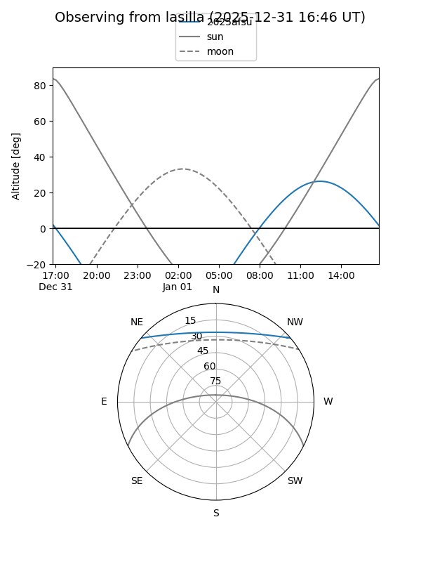
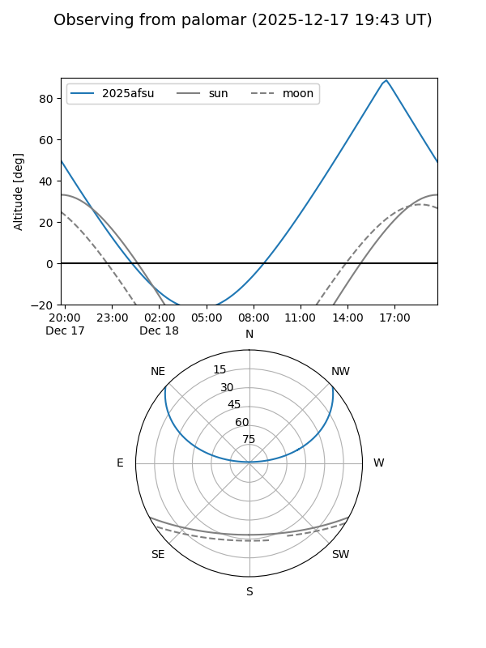
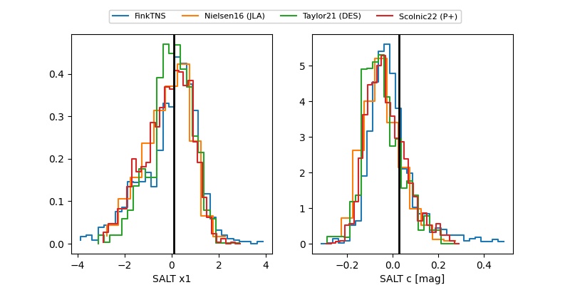

2025afsu
Target 2025afsu at 2025-12-21 12:47
Aliases and brokers:
FINK: fink-portal.org/ZTF25acftxxl
Lasair: lasair-ztf.lsst.ac.uk/objects/ZTF25acftxxl
ALeRCE: alerce.online/object/ZTF25acftxxl
TNS: wis-tns.org/object/2025afsu
YSE: ziggy.ucolick.org/yse/transient_detail/2025afsu
alt names
ZTF25acftxxl (ztf,fink_ztf)
2025afsu (tns,yse)
Coordinates:
equatorial (ra, dec) = 216.8850,+34.51201
equatorial (HMS+DMS) = 14:27:32.40,+34:30:43.25
galactic (l, b) = (58.5773,+68.15172)
Flags:
Photometry:
last atlaso=18.52, ztfg=19.01, ztfr=18.50
1 atlaso, 6 ztfg, 5 ztfr detections
Lightcurve

Visibility


Additional plots
